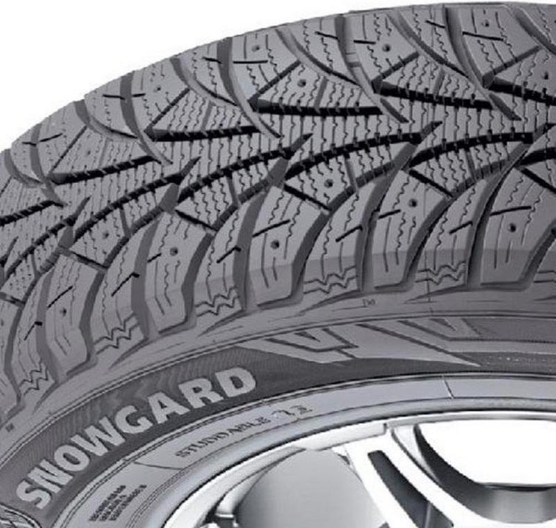
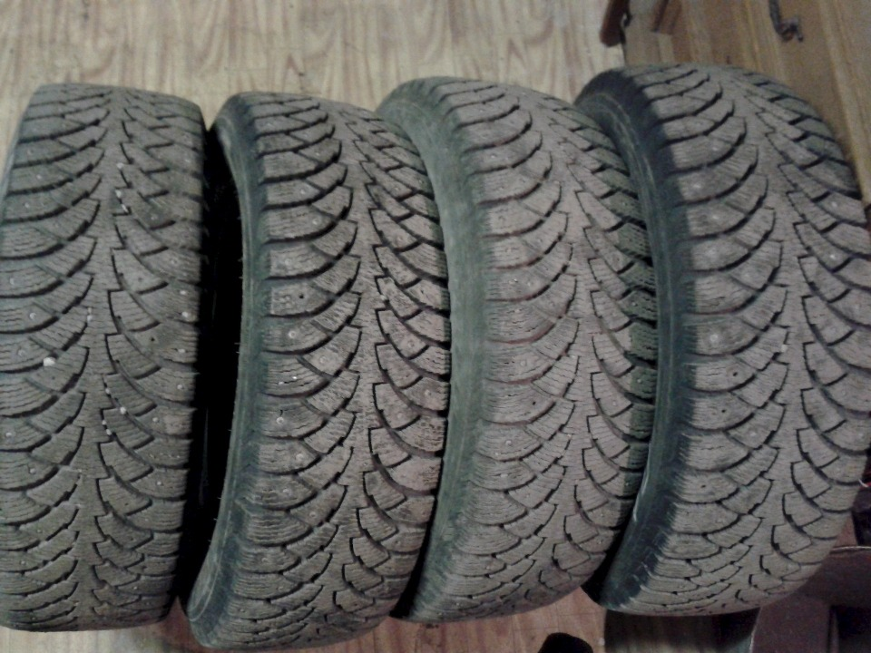
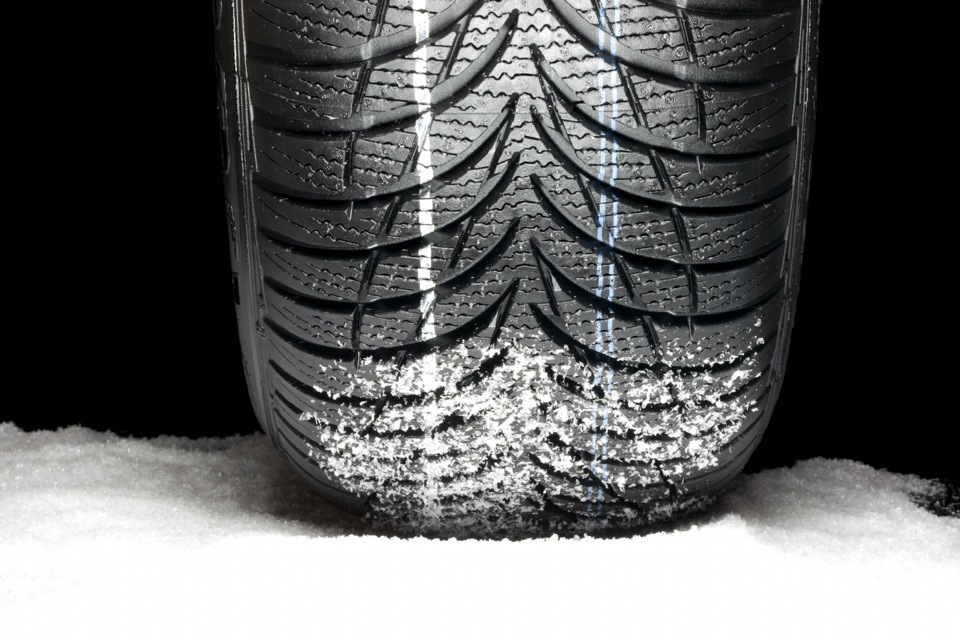
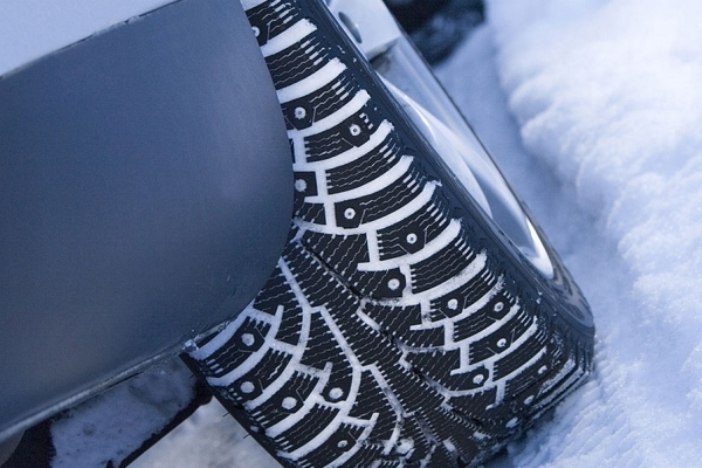

Як правильно вибрати зимові шини для свого автомобіля?
Коли настають холоди, виникає необхідність заміни літнього комплекту гуми на зимовий, адже тільки так можна забезпечити комфорт управління і безпеку пересування засніженими та обмерзлими дорогами. Але вкрай важливо знати, як вибрати зимову гуму на авто, щоб вона прослужила якомога довше і чітко виконувала свої завдання.
Переваги зимових шин
Зимова гума відрізняється від літніх і всесезонних покришок не тільки рисунком протектора. Кожен виробник підбирає унікальні хімічні суміші для експлуатації покришок в певному температурному діапазоні, і при виході за його межі характеристики автошин починають погіршуватися. При зниженій температурі літня гума стає менш еластичною і вже не здатна забезпечувати належне зчеплення з дорожнім полотном, мінімальний гальмівний шлях та інші закладені характеристики.
Якщо ж говорити про всесезонні шини, то більшість автовласників впевнені, що вони можуть використовуватися цілий рік, але насправді такі покришки не підходять для сильних морозів. Вони розраховані на експлуатацію при помірних погодних умовах і якісному дорожньому покритті (сухому або злегка мокрому). В ідеалі всесезонні покришки призначені переважно для міжсезоння в якості доповнення до зимового і літнього комплектів.
Саме тому при зміні сезону слід обов'язково встановлювати відповідну гуму для автомобіля. Виробники рекомендують ставити зимові шини, коли температура на вулиці протягом декількох днів нижче +5 °C. Зважаючи на погодні умови України бажано змінювати покришки в кінці жовтня або початку листопада.
Види зимових шин
Щоб підібрати хорошу гуму, слід вивчити особливості кожного виду автошин на зиму. Залежно від типу конструкції, зимові покришки можуть бути шипованими та фрикційними. Останні підрозділяються на два класи: скандинавські і європейські. Розглянемо детальніше особливості трьох цих різновидів автошин, які підходять для експлуатації в певних кліматичних умовах.
Шипована гума Будова таких покришок передбачає наявність металевих шипів, завдяки яким забезпечується краще зчеплення з мокрими, засніженими та обмерзлими дорогами, а також якісне і чітке гальмування. Шиповану гуму зазвичай використовують для пересування по твердому сухому крижаному покриттю.
Оскільки шини мають унікальну специфіку, вони є досить гучними, до того ж при пересуванню по сухому асфальтованому покриттю вони втрачають свої властивості та швидко зношуються. Шипована гума доцільна для застосування автомобілістами, які багато часу проводять за містом або живуть в невеликих населених пунктах, де часто спостерігається ожеледь на дорогах. Для жителів великих українських міст, де дороги постійно посипають реагентами, шиповані покришки невигідні.
Фрикційні автошини скандинавського типу Такі шини мають схожі властивості з шипованими моделями - головна їхня відмінність полягає у відсутності шипів. «Скандинавські» шини призначені для експлуатації при наднизькій температурі та великій засніженості доріг. Необхідні показники зчеплення з дорожнім покриттям забезпечуються завдяки великій кількості ламелей в рисунку протектора, внаслідок яких продавлюється сніг покришками.
Зимова гума скандинавського типу відрізняється м'якістю, через що вона показує не найвищу ефективність при пересувані по льоду і теж швидше зношується на сухому асфальті. Такі покришки доцільно використовувати в тих регіонах, де спостерігається сильна засніженість і довгі, холодні зими. При встановленні таких шин не варто боятися переметів та великих заметів, при цьому гума забезпечує високу швидкість пересування, легкість входження в повороти, різкі прискорення і гальмування.
Не шипована гума європейського типу Ці покришки є повною протилежністю скандинавських автошин. «Липучку» оптимально використовувати в регіонах, де спостерігаються м'які та вологі зими, де часто йде дощ, а дороги постійно вкриті мокрим снігом. Не шиповані покришки забезпечують хороше зчеплення з дорогою при сніговій каші навіть при русі на високій швидкості. Але при ожеледі та пересуванню по вкатаному снігу з такою гумою потрібно бути обережним. Найчастіше європейські "липучки" підходять для переміщення по місту або по чистому асфальтованому покриттю при низькій температурі.
Коли варто купувати нові шини?
Це питання хвилює багатьох автомобілістів, адже ставити зимовий комплект гуми потрібно в обов'язковому порядку при настанні холодів.
Важливо визначити ступінь зносу зимової гуми. Для цього слід виміряти граничну залишкову висоту рисунка протектора, і якщо вона не менше 1.6 мм (для легкових покришок), то використовувати шини ще можна. Якщо говорити про шиповану гуму, то на ній має бути достатня кількість шипів і відсутня іржа.
Аби правильно купити гуму, слід вивчити маркування, де вказано дату виготовлення виробу. Необхідний індекс містить чотири цифри, які позначають тиждень і рік, коли були випущені покришки. Якщо вказано лише три цифри, то вийде, що шини були виготовлені в минулому столітті.
Чи можна зимові шини ставити тільки на провідні колеса?
Це теж дуже поширене питання, оскільки багато автомобілістів в Україні вважають, що зимові шини потрібні тільки для хорошого гальмування, ривка з місця на льоду й утоптування снігу. Але це далеко не всі завдання, які виконують покришки для зими.
Слизькі дороги самі по собі дуже підступні. Часто можна спостерігати, як автомобіль потрапив у крижану колію, а вибратися з неї не може навіть при встановленій шипованій гумі. А що б було, якби зимові автошини поставили тільки на одну вісь, а на другу встановили б звичайні літні покришки? Останні задубіють на сильному морозі та можуть потріскатися, при цьому машину може гарненько занести в бік навіть на найшкідливіших ділянках і при їзді на невисокій швидкості. Звичайно, тут багато що залежить від типу приводу, але ризикувати своїм життям і самим автомобілем - дурне і небезпечне рішення. Тому встановлювати зимовий комплект потрібно на всі колеса.
Обкатка зимових шин
Варто врахувати, що динаміка авто при використанні літньої та зимової гуми сильно відрізняється. Покришки на зиму виробляються, щоб забезпечити хороше зчеплення з засніженою й обмерзлою дорогою. Так, зимові шини відрізняються більшою глибиною і ламелюванням протектора, ніж моделі для літнього періоду, що й гарантує більш ефективне зчеплення. Але через це також сповільнюється відгук при управлінні автомобілем.
Для виготовлення автошин для зими виробники використовують більш м'яку гуму, яка зберігає гнучкість при низьких температурах. Це істотно впливає на швидкісний режим, який рекомендується не порушувати, інакше станеться швидше зношування покришок. Крім того, щоб запобігти прилипанню гуми до форми, при вулканізації шину покривають спеціальним мастилом, яке залишається на поверхні та зменшує зчеплення з дорогою. Щоб прибрати це мастило, необхідно при спокійному пересуванню проїхати пару сотень кілометрів без сильних прискорень, раптового гальмування і різких поворотів. Все це говорить про те, що бажано обкатати зимові шини до випадання першого снігу і заморозків.
На що звертати увагу в маркуванні при виборі зимової гуми
Вибираючи конкретні моделі покришок для зимової експлуатації, потрібно розуміти, що позначають ті чи інші індекси в маркуванні. Розглянемо конкретний приклад зимової гуми та розшифровку умовних позначень: NAME P215/65R15 95H M + S • TREADWEAR 220 • TRACTION A • TEMPERATURE A:
- P - вказівка типорозміру шин (в нашому прикладі Passenger - для легкових машин);
- 215 - ширина (мм);
- 65 - висота (відсотки);
- R - радіальний тип конструкції;
- 15 - значення посадкового діаметра (дюйми);
- 95 - індекс, що позначає навантаження, яке витримує шина;
- T - індекс, що вказує на швидкісний режим;
- M + S (Mud + Snow) - зимова або всесезонна гума;
- Treadwear 220 - індекс, що позначає знос (чим більше, тим краще);
- Traction А - індекс ефективності гальмування (A - найкраща ефективність, В - середня, C - найнижча);
- Temperature А - індекс стійкості до нагрівання (A - найкраща стійкість, В - середня, C - найгірша).
У маркуванні можуть бути вказані додаткові позначення, які розшифровуються таким чином:
- All Seasons (AS) - всесезонна шина;
- ❄ сніжинка - покришка для зими;
- Tubeless - безкамерна конструкція;
- Max press 35 PSI - максимальний тиск, що витримується;
- Outside/Inside - зовнішня/внутрішня сторона (для асиметричних виробів);
- Rotation - позначення напрямку обертання;
- Water/Rain/Aqua/парасолька - позначення, що свідчить про стійкість до аквапланування.
Велика частина позначень вказана для простого вивчення, але варто уважніше придивитися до деяких індексів: ширини та висоти профілю, навантаження і швидкості, показників зносу і гальмування.